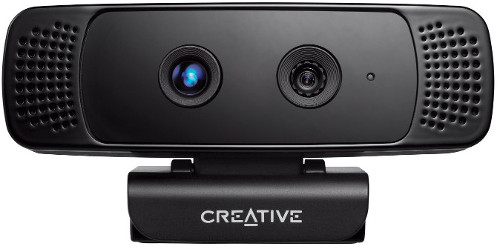

Grabbing point clouds from DepthSense cameras
In PCL 1.8.0 a new grabber for DepthSense cameras was added. It is based on DepthSense SDK and, as such, should work with any camera supported by the SDK (e.g. Creative Senz3D, DepthSense DS325).
Note
This grabber obsoletes PXCGrabber, which was a Windows-only solution based on discontinued Intel Perceptual Computing SDK.
In this tutorial we will learn how to setup and use DepthSense cameras within PCL on both Linux and Windows platforms.
DepthSense SDK installation
Download and install the SDK from SoftKinetic website. Note that to obtain Linux drivers you need to register (free of charge).
Linux
The Linux version of camera driver was built against an outdated version of libudev, so it will not work unless you have version 0.13 of this library installed (for example Ubuntu 14.04 comes with a newer version). There are several easy ways to solve this problem, see this or this blog post.
Furthermore, the Linux version of SDK is shipped with its own libusb-1.0.so library. You may have this library already installed on your system (e.g. because it is required by some other grabbers). In this case there will be conflicts, which will manifest in a flood of CMake warnings during configuration stage. To avoid this simply delete the corresponding files from the SDK installation path:
$ sudo rm /opt/softkinetic/DepthSenseSDK/lib/libusb-1.0*
You can verify your installation by plugging in the camera and running the viewer app distributed with the SDK:
$ /opt/softkinetic/DepthSenseSDK/bin/DepthSenseViewer --standalone
Windows
After the installation is completed you need to add the SDK path to the PATH environment variable. The installation path itself is stored in DEPTHSENSESDK64 (on a 64-bit system) environment variable, thus you need to append ;%DEPTHSENSESDK64%\bin to your path. Do not forget to re-login for the changes to take effect.
Verify installation by running DepthSenseViewer.exe in command prompt.
PCL configuration
You need at least PCL 1.8.0 to be able to use the DepthSense SDK. The
WITH_DSSDK option should be enabled in the CMake configuration.
DepthSense Viewer
The grabber is accompanied by an example tool pcl_depth_sense_viewer which can be used to view and save point clouds coming from a DepthSense device. Internally it uses the DepthSenseGrabber class that implements the standard PCL grabber interface.
You can run the tool with –help option to view the usage guide.
The video below demonstrates the features of the DepthSense viewer tool. Please note that the bilateral filtering (which can be observed in the end of the video) is currently disabled is the tool.